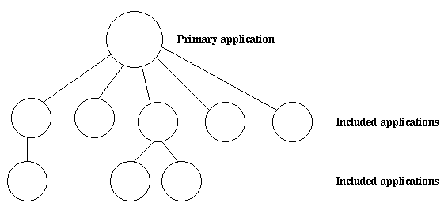

9 Included Applications
9.1 Introduction
An application can include other applications. An included application has its own application directory and .app file, but it is started as part of the supervisor tree of another application.
An application can only be included by one other application.
An included application can include other applications.
An application that is not included by any other application is called a primary application.
Figure 9.1: Primary Application and Included Applications
The application controller automatically loads any included applications when loading a primary application, but does not start them. Instead, the top supervisor of the included application must be started by a supervisor in the including application.
This means that when running, an included application is in fact part of the primary application, and a process in an included application considers itself belonging to the primary application.
9.2 Specifying Included Applications
Which applications to include is defined by the included_applications key in the .app file:
{application, prim_app,
[{description, "Tree application"},
{vsn, "1"},
{modules, [prim_app_cb, prim_app_sup, prim_app_server]},
{registered, [prim_app_server]},
{included_applications, [incl_app]},
{applications, [kernel, stdlib, sasl]},
{mod, {prim_app_cb,[]}},
{env, [{file, "/usr/local/log"}]}
]}.9.3 Synchronizing Processes during Startup
The supervisor tree of an included application is started as part of the supervisor tree of the including application. If there is a need for synchronization between processes in the including and included applications, this can be achieved by using start phases.
Start phases are defined by the start_phases key in the .app file as a list of tuples {Phase,PhaseArgs}, where Phase is an atom and PhaseArgs is a term.
The value of the mod key of the including application must be set to {application_starter,[Module,StartArgs]}, where Module as usual is the application callback module. StartArgs is a term provided as argument to the callback function Module:start/2:
{application, prim_app,
[{description, "Tree application"},
{vsn, "1"},
{modules, [prim_app_cb, prim_app_sup, prim_app_server]},
{registered, [prim_app_server]},
{included_applications, [incl_app]},
{start_phases, [{init,[]}, {go,[]}]},
{applications, [kernel, stdlib, sasl]},
{mod, {application_starter,[prim_app_cb,[]]}},
{env, [{file, "/usr/local/log"}]}
]}.
{application, incl_app,
[{description, "Included application"},
{vsn, "1"},
{modules, [incl_app_cb, incl_app_sup, incl_app_server]},
{registered, []},
{start_phases, [{go,[]}]},
{applications, [kernel, stdlib, sasl]},
{mod, {incl_app_cb,[]}}
]}.When starting a primary application with included applications, the primary application is started the normal way, that is:
- The application controller creates an application master for the application
- The application master calls Module:start(normal, StartArgs) to start the top supervisor.
Then, for the primary application and each included application in top-down, left-to-right order, the application master calls Module:start_phase(Phase, Type, PhaseArgs) for each phase defined for the primary application, in that order. If a phase is not defined for an included application, the function is not called for this phase and application.
The following requirements apply to the .app file for an included application:
- The {mod, {Module,StartArgs}} option must be included. This option is used to find the callback module Module of the application. StartArgs is ignored, as Module:start/2 is called only for the primary application.
- If the included application itself contains included applications, instead the {mod, {application_starter, [Module,StartArgs]}} option must be included.
- The {start_phases, [{Phase,PhaseArgs}]} option must be included, and the set of specified phases must be a subset of the set of phases specified for the primary application.
When starting prim_app as defined above, the application controller calls the following callback functions before application:start(prim_app) returns a value:
application:start(prim_app) => prim_app_cb:start(normal, []) => prim_app_cb:start_phase(init, normal, []) => prim_app_cb:start_phase(go, normal, []) => incl_app_cb:start_phase(go, normal, []) ok